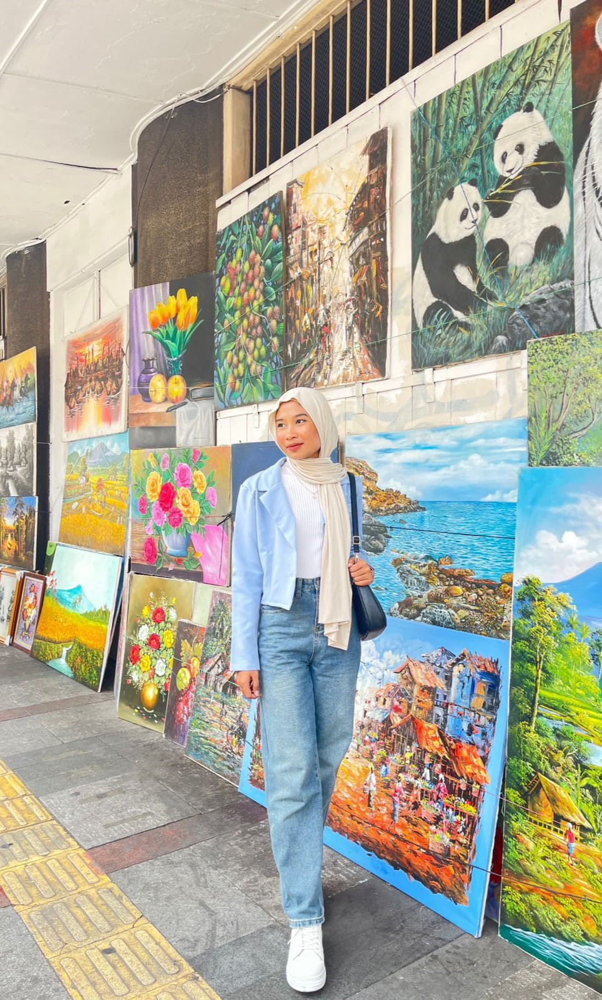

Hello, i'am
Raudah Musrifa
Hallo, Nama saya Raudah Musrifa. Saya seorang mahasiswa Universitas Pelita Bangsa, saya juga sedang bekerja di Pt Tunas Gemilang Solusitama sebagai admin. Saya merupakan anak ke dua dari tiga bersaudara, tujuan saya kuliah sambil bekerja untuk meningkatkan value dalam diri saya dan bisa menyekolahkan adik saya. Saya senang bernyanyi juga olah raga, jika saya sedang memiliki waktu luang saya menyempatkan untuk olah raga, biasanya saya workout kecil atau bermain badminton.
